Префектура Киото · Киото, река Камо · где остановиться и еда
The Ritz-Carlton, Kyoto: отель над рекой Камо и стол шефа на шесть гостей
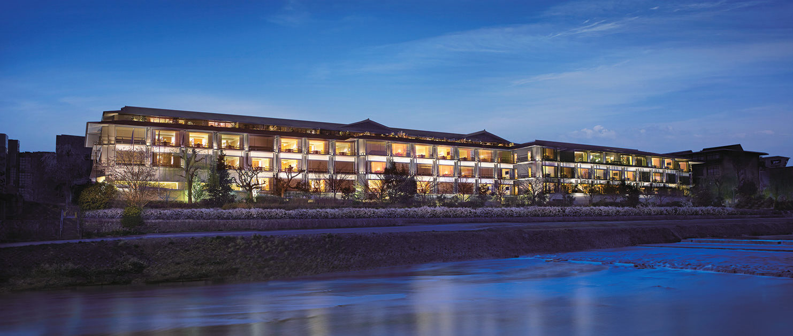
The Ritz-Carlton, Kyoto стоит на западном берегу реки Камо, напротив гор Хигасияма. В городе, где самые оживлённые кварталы начинаются в нескольких минутах ходьбы, здесь удивительно тихо, а с 2021 года в отеле работает стол шефа всего на шесть мест.
Отель
Горы Хигасияма и река Камо за окном
Хигасияма, «восточные горы», это цепь холмов на востоке Киото. Их издавна называют «тридцать шесть вершин Хигасиямы», и из The Ritz-Carlton, Kyoto они видны во всю ширину, а прямо под окнами течёт река Камо. Отель стоит у моста Нидзё-охаси, от него удобно идти в Гион и в узкий квартал Понтотё вдоль реки. При этом шум города сюда почти не долетает.
У входа бежит вода, и её звук будто отделяет гостя от улицы. Внутри отель продолжает старый Киото: традиционные японские мотивы, работа ремесленников, сад камней карэсансуй и около 400 произведений искусства, задуманных по мотивам «Повести о Гэндзи», романа придворной дамы Мурасаки Сикибу, написанного в начале XI века.
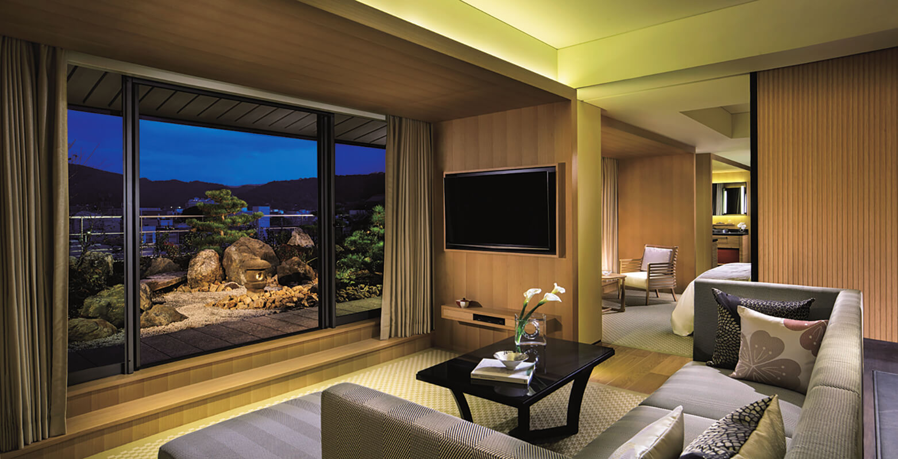
Больше половины номеров выходят на Камо. Люксов в отеле 17, и все они разные. В угловых из окон видно и горы, и реку сразу, а у некоторых есть собственная терраса с японским садом. В ресторанах японской и итальянской кухни меню меняется вместе с временами года, а для гостей устраивают занятия, через которые можно ближе узнать культуру старой столицы.
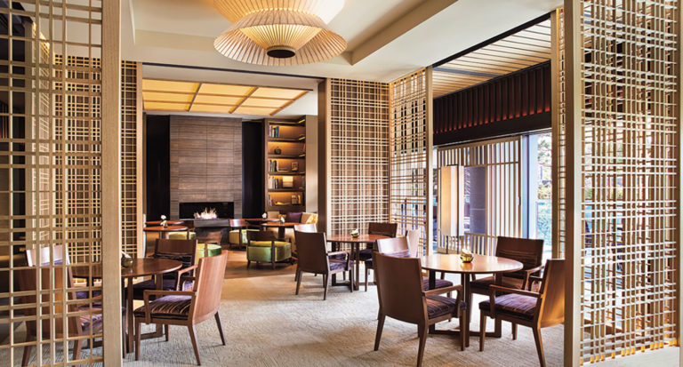
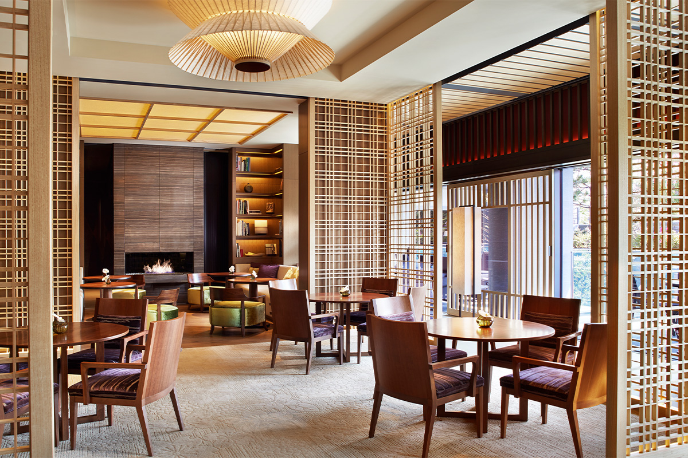
The Ritz-Carlton, Kyoto
- Адрес
- префектура Киото, город Киото, район Накагё, Камогава Нидзё-охаси-хотори
- Телефон
- +81 75-746-5555
- Номера
- 134
- Цены / Вход
- от 85 000 иен за номер на двоих за ночь, без налога и сервисного сбора
- Заезд / выезд
- 15:00 / 12:00
- Как добраться
- 3 минуты пешком от станции Киото-Сияку-сё-маэ (линия метро Тодзай), 6 минут от станции Сандзё (линия Кэйхан)
В отеле есть рестораны кайсэки, суши, тэмпуры, тэппанъяки и итальянской кухни, бар, лаундж и спа.
Стол шефа
Ужин без меню на шесть гостей
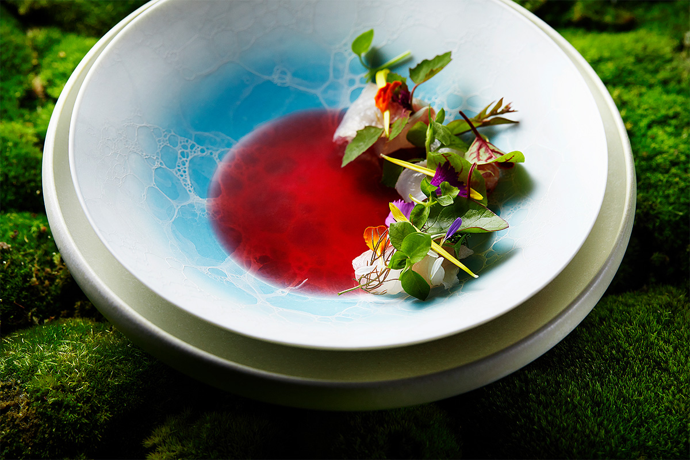
В августе 2021 года в отеле открылся Chef's Table by Katsuhito Inoue. Его ведёт Кацухито Иноуэ, исполнительный шеф итальянской кухни отеля. Роскошь, по его мысли, меняется: теперь это возможность чувствовать себя свободно и удобно. Поэтому стол шефа задуман как дом. Он стоит рядом с особняком Эбисугава-тэй, историческим зданием 1908 года, которое сохранилось на территории отеля. В комнату входят без обуви, и за столом, сделанным специально для неё, кормят только шестерых гостей за вечер.
Сам стол украшают мхом, ветками и опавшими листьями, так что он выглядит как крошечный японский сад. Эту композицию каждый день меняет садовник отеля, и каждый вечер стол выглядит по-новому.
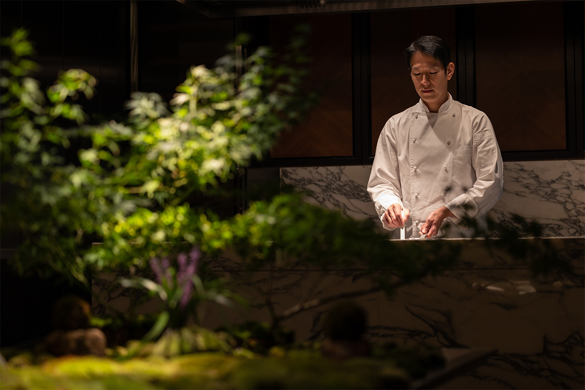
Одна из тем стола шефа взята из старого календаря, где год делится на 72 коротких сезона, каждый по пять дней. Вдохновляясь такой точностью, Иноуэ сознательно не составляет меню и готовит из того, что в этот день вкуснее всего. Продукты в основном киотские овощи, и достаются они шефу благодаря отношениям, которые он выстраивал двадцать лет, объезжая фермеров. Он сам смотрит, как растят и делают то, что потом попадёт на тарелку, и потому продукты здесь отличные, а дальше в дело идут идеи и мастерство шефа.
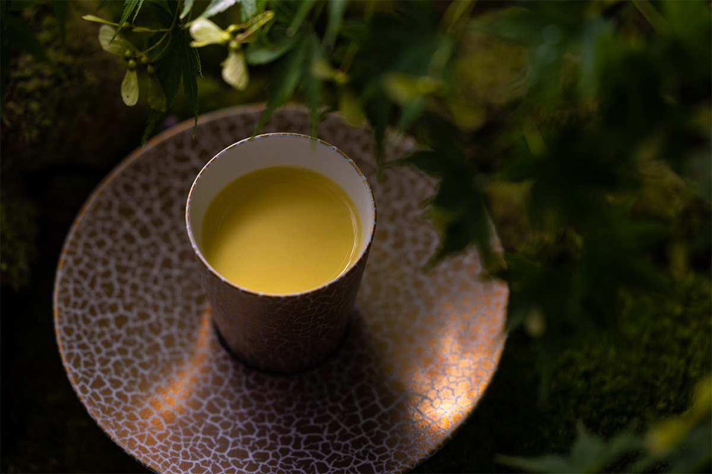
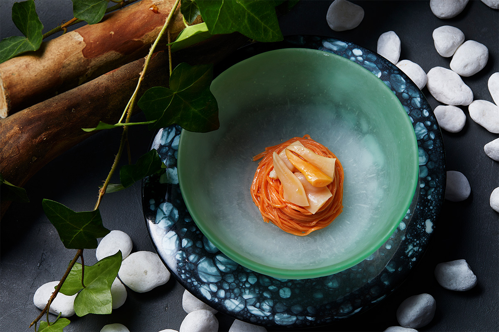
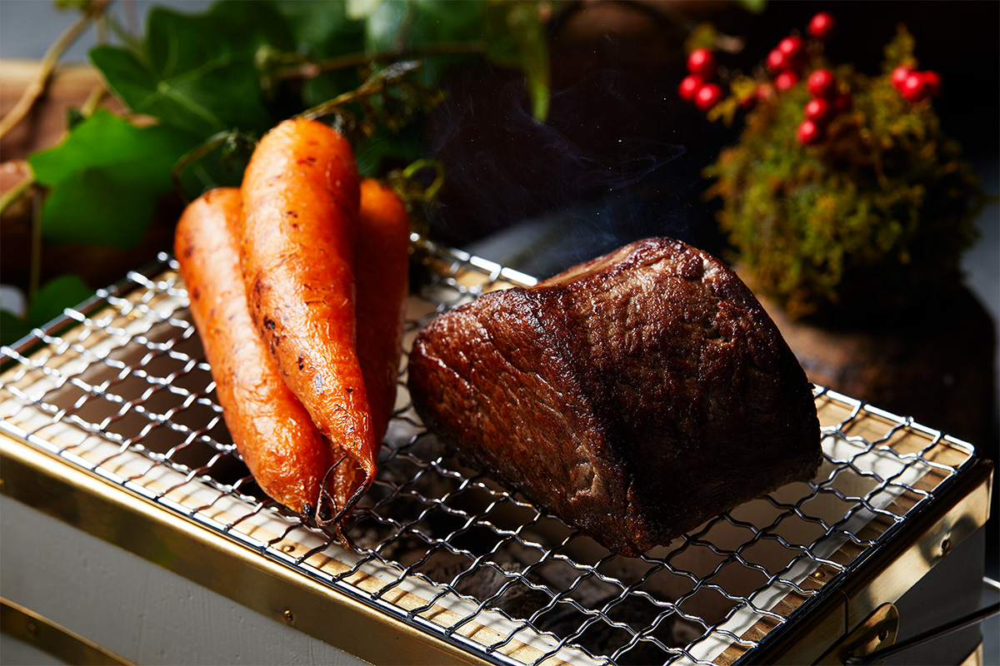
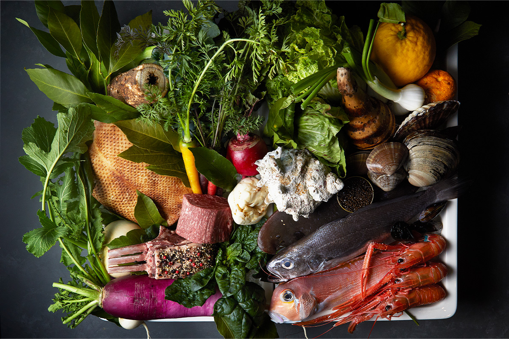
Кухня
Еда, бережная к людям и к планете
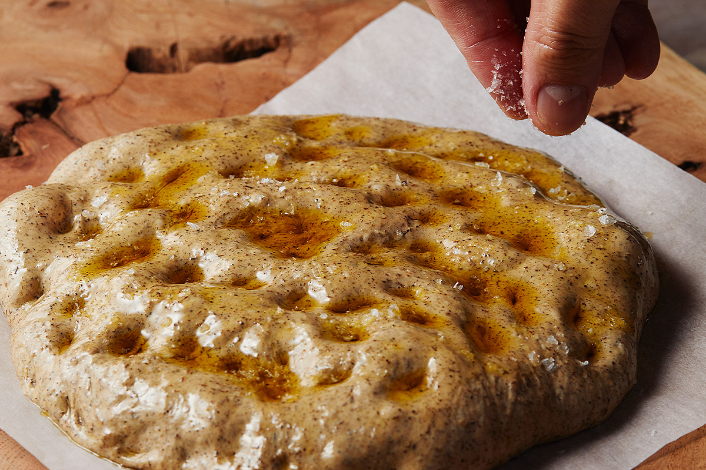
Иноуэ четыре года работал в известных ресторанах в провинциях Италии и Испании. Вернувшись в Японию, он в каждый отпуск едет в рестораны по всему миру, где готовят самую передовую еду, и узнаёт, чем живёт кухня сегодня. Сам он готовит еду, «бережную к тому, кто её ест». Важна не только красота и вкус: в меню есть ферментированные продукты, например домашняя комбуча, и еда получается сытной и сбалансированной. Фритто в самом конце слегка обжаривают на углях: корочка становится ароматной, середина остаётся горячей, а лишнее масло стекает.
Не меньше заботится шеф и о планете. Из обрезков овощей, оставшихся от ужина, он печёт хлеб. Рыбу, которая обычно не доходит до рынка, он с помощью опытных рыбаков и перекупщиков превращает в отличные блюда.
«Бережно обращаться с жизнью и использовать её до конца: только тогда это и есть кулинария»
шеф Кацухито Иноуэ
Эта мысль перекликается с давней киотской привычкой «симацу», кухней, в которой продукт используют без остатка.
Ферма
Овощи с берега Кацуры
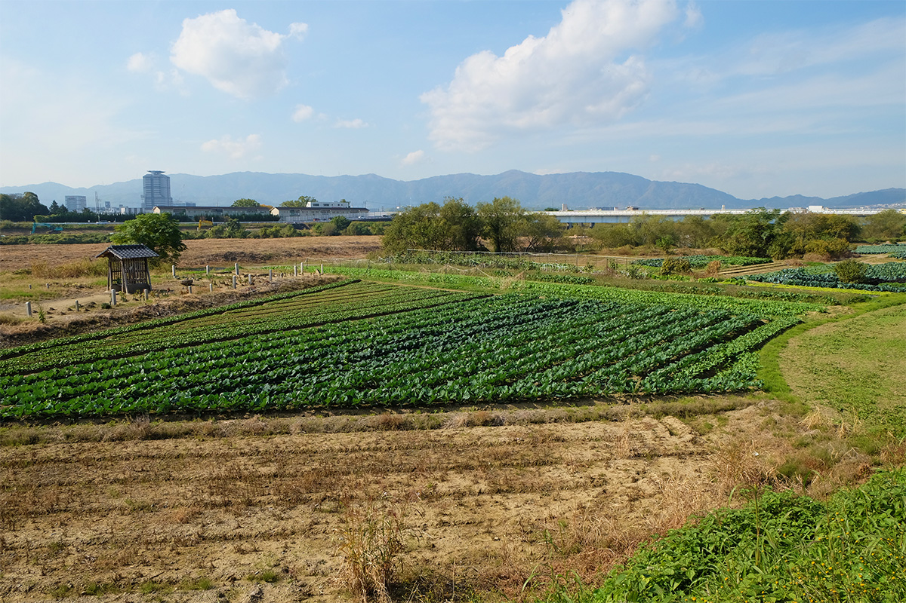
В 15 минутах на машине от отеля, у реки Кацура, лежат поля фермы «Исивари», которую ведёт одна семья с эпохи Эдо (1603–1868). Нынешний хозяин, десятое поколение, выращивает овощи в основном органически и выводит новые сорта. С Иноуэ они знакомы двадцать лет. Ферма растит овощи под заказ шефа, и сортов здесь уже около 150.
Пестицидов хозяин фермы больше тридцати лет почти не использует, удобрения в основном органические. Его овощи заказывают известные рестораны и рётэй Киото, и все они сочные и полные силы. Секрет оказался неожиданным.
«Я задумался, почему так вкусны цитрусы во Внутреннем Японском море. Решил, что дело в почве, в которой в меру морских минералов. Взял ракушки у ресторанов, с которыми работаю, рассыпал под цитрусовыми, и плоды выросли ароматные и вкусные. Так же я пробовал молоть в порошок пищевые отходы, делать удобрение из комбу и кацуобуси, и вкус почти всегда становился лучше»
хозяин фермы «Исивари»
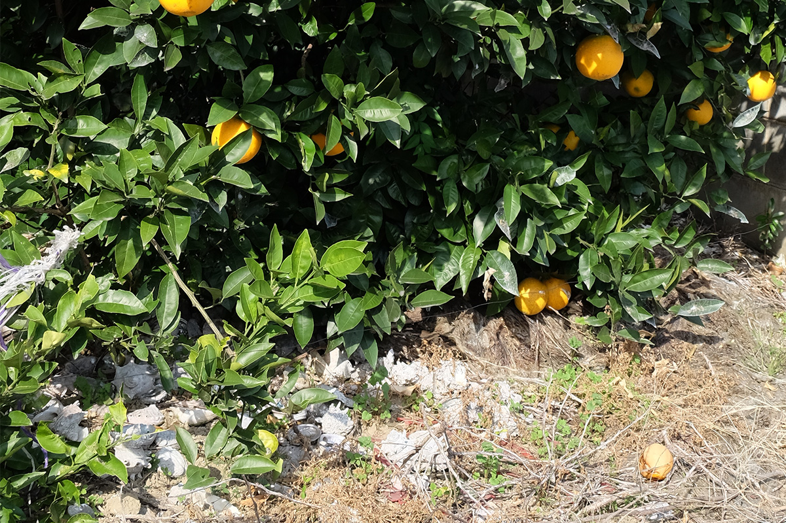
Хозяин фермы прислушивается к овощам и соединяет идеи с опытом, а на столе шефа подают блюда из киотских овощей, собранных утром на этой ферме.
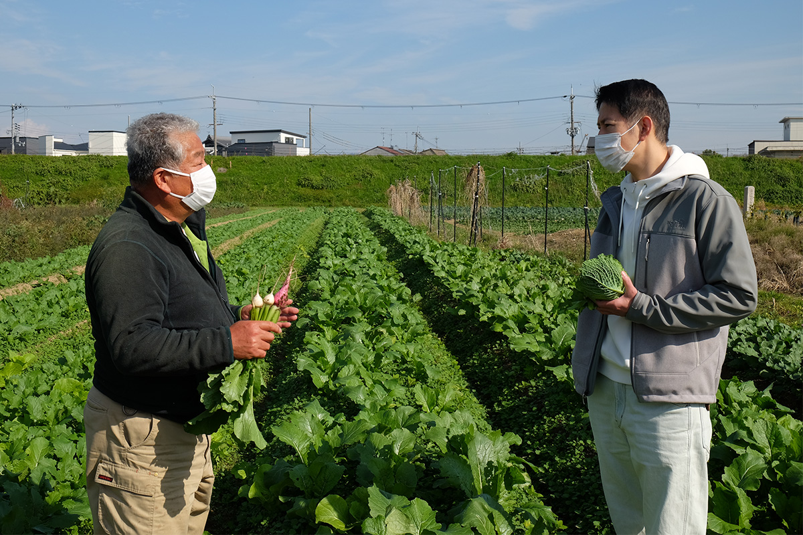
Ужин здесь знакомит с переменами сезонов, с благодарностью природе и с историей, которая стоит за каждым продуктом на тарелке.
Chef's Table by Katsuhito Inoue
- Адрес
- префектура Киото, город Киото, район Накагё, Камогава Нидзё-охаси-хотори, The Ritz-Carlton, Kyoto, 1-й этаж, Saletta Privata
- Телефон
- +81 75-746-5522
- Часы работы
- начало ужина для всех в 18:00
- Выходные
- воскресенье, понедельник
- Цены / Вход
- 45 000 иен с налогом и сервисным сбором, сочетание с вином 15 000 иен (2026)
- Сайт
- tablecheck.com